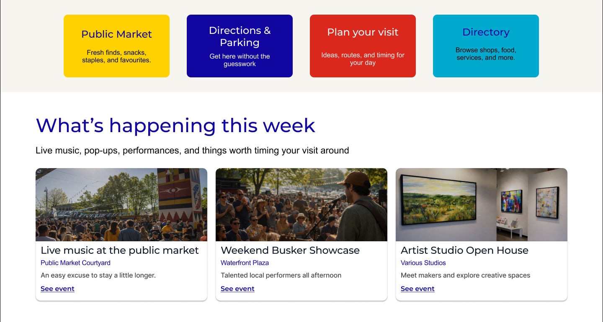
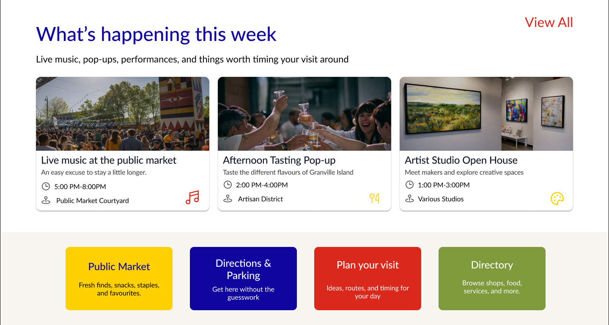

IXD 106 / Website redesign
Granville
Island.
More to discover.
A clearer place to start.
A destination website needs to help people choose what to do, then find the details that make a visit possible.
I worked on the information architecture, conducted three user-testing interviews, created wireframes, and collaborated with Sara and Avery on the layout.
Open the Figma prototype- My contribution
- Independent IA, testing,
wireframes, shared layout - Design team
- Ian Johnstone,
Sara and Avery - Timeline
- February–April 2026
- Context
- Coursework / Figma concept
Desktop website prototype
A shared layout decision
Let current
experiences lead.
The brief asked us to help visitors discover experiences across the island and find practical information for a visit. That made the order of the homepage content a consequential decision.
Our notes showed that several participants noticed the four colourful shortcut cards first. In the final group layout, weekly events appear above those cards.


Final layout on the left. Earlier direction on the right.
The intention was to make current experiences more noticeable while keeping practical shortcuts available.
Evidence and limits
The team’s research workbook, “User Research Interviews,” row 18, records what participants noticed first. The comparison uses the earlier homepage and final group homepage.
The earlier frame is not confirmed as the exact version used in testing. First notice is an attention finding, rather than a timed task-success measure. The revised order has not been re-tested.
My independent contribution
Organize around
visitor tasks.
I completed the information hierarchy independently. The assignment supplied a historical content inventory with inactive URLs, so I used its titles and descriptions to infer content types and propose a clearer structure.
I separated visitors’ main tasks from specialist resources and looked for recurring content that could share a consistent structure.
What I changed in the structure
- Group related content
- Recipes sit beneath a recipe index, giving related pages a clear parent rather than treating each as a separate destination.
- Define repeatable information
- Events share fields for date, time, location and cost. Consistent content fields support comparison across pages.
- Separate secondary access
- Administrative and tenant resources use secondary access, keeping the main navigation focused on visitor needs.
I also created wireframes to explore page structure and contributed to the layout with the team.
Explore the wireframe working fileSource: my information hierarchy, pages 3 and 5–10. This is a proposed structure inferred from supplied content. It was not validated through a separate IA study.
From a research request to an interface action
Useful details.
Before the visit.
Participants could find printed hours and contact information, but asked for a menu. One also wanted clearer dietary information before choosing where to eat.
We added a View Menu action beside the vendor’s core information. Hours and location also remain visible on the recommendation page, before opening a profile.
A next step still to resolve
The menu destination is incomplete in the sampled prototype. Dietary information also needs a clearer treatment.
Evidence: “User Research Interviews,” rows 26–31. Final vendor frame 377:566 and recommendation frame 377:730.
Where the project stands
A structured concept.
A next test to run.
The final concept connects broad activity discovery to a specific vendor. My contribution combined independent content structure with research, wireframing and shared layout work.
- Delivered
- An independent IA proposal, wireframes, and a shared desktop Figma concept.
- Observed in the prototype
- The route from Home to Events, Categories, Quick Bites and a vendor profile can be followed.
- Still to validate
- The revised event hierarchy, complete menu access, clearer dietary details, contrast, and a matched mobile task.
There is no verified post-revision usability result or measured impact on visits or vendor engagement.
Project sources and disclosure
Additional records: “GI - Informtion Hiearchy.pdf,” pages 3 and 5–10; “GI Final pres.pdf,” pages 35, 39, 43–49 and 51. The coursework used supplied research and an imagined client brief. It was not a commissioned or launched Granville Island website.
Project records disclose AI assistance with writing, structural exploration and some imagery. This case study was also prepared with AI assistance. Interface artwork is reproduced from the original exports, with selected crops. No new research was performed.